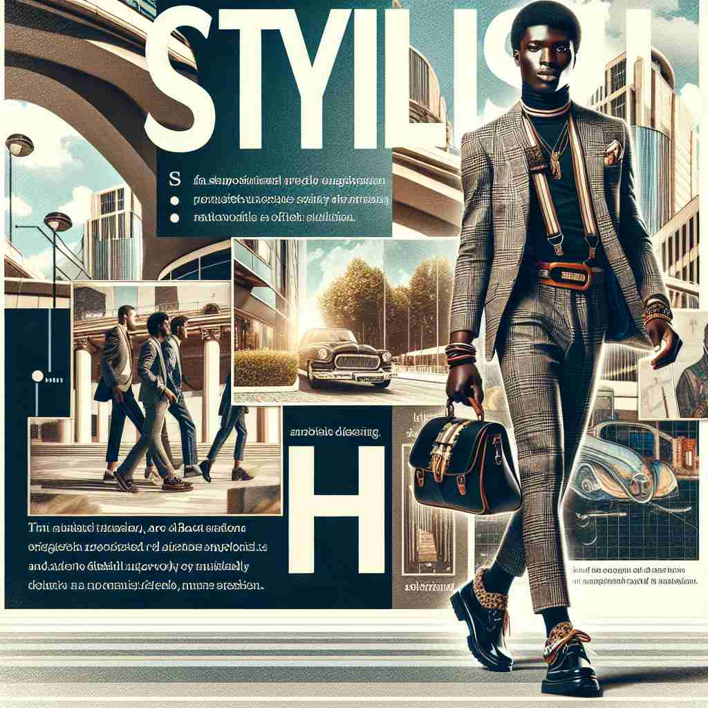

💬 The man is wearing a stylish outfit as he walks through the city.

💬 The man is wearing a stylish suit that makes him look attractive.
🔈 ['staɪlɪʃ]
🗝️ adj. fashionable and attractive
🖼️ 在一个热闹的时装发布会上，模特们依次走上T台，穿着极具设计感的服饰，引得观众们纷纷拍照。每一件服装都展示了'时尚而吸引人'的感觉，完美诠释了'stylish'的这个含义。
🔍 记忆'stylish'时，想象一个人穿着时尚、吸引眼球的服装。这种核心图像既包含了'fashionable'（时尚的）又有'attractive'（吸引人的）的元素。从这个核心概念出发，可以轻松联想到优雅、跟随潮流、得体行为，以及具有特定风格等相关含义。所有这些含义都围绕着'有品味、有格调'这一中心思想展开。
💬 The man is wearing a stylish outfit as he walks through the city.
💬 The man is wearing a stylish suit that makes him look attractive.
🌳 单词 'stylish' 由词根 'style'（风格）加上形容词后缀 '-ish' 组成，表示具有某种风格的或时尚的。
💡 记忆 'stylish' 时，可以联想为 'style' + 'ish'，即拥有风格、时尚的。通过将 '风格' 和 '时尚' 结合，容易记住其意义。
🗝️ adj. elegant and sophisticated
🖼️ 在一个高端餐厅的晚宴上，一名女士身着一袭优雅的长裙，珠光宝气，她手持水晶酒杯，举止间尽显优雅与成熟。这种氛围下，'stylish'的'优雅和复杂'得到了充分表现。
💬 The restaurant has a stylish interior design.
❓ 时尚通常与优雅和精致相关
🗝️ adj. following the latest trends
🖼️ 在充满活力的城市街头，年轻人们穿着印有最新潮流图案的T恤，搭配流行的运动鞋，聚集在一起聊天和自拍。他们的装扮展现了'stylish'中'紧跟最新潮流'的含义。
💬 His new haircut is very stylish.
❓ 时尚意味着跟随最新潮流
🗝️ adj. impressively smart in appearance or behavior
🖼️ 在一场办公会议上，一位穿着笔挺西装的青年人用流利的演讲赢得了同事们的赞赏。不仅是衣着打扮，他的自信表现也让人印象深刻，真正符合'stylish'的'外表或行为上给人深刻印象'的含义。
💬 He made a stylish entrance at the party.
❓ 时尚外表常与得体行为相联系
🗝️ adj. characterized by a particular style
🖼️ 在一个装饰精致的家居展厅，家具的设计独具风格，色彩搭配和谐，每一件都透露着独特的美感。整个场景完美诠释'stylish'的'具有特定风格'的含义。
💬 The author is known for his stylish prose.
❓ 从核心含义延伸到具有特定风格